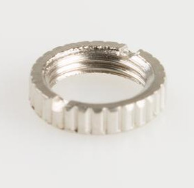
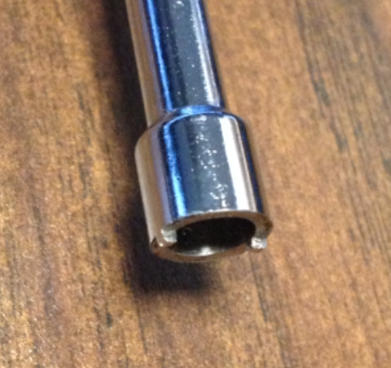
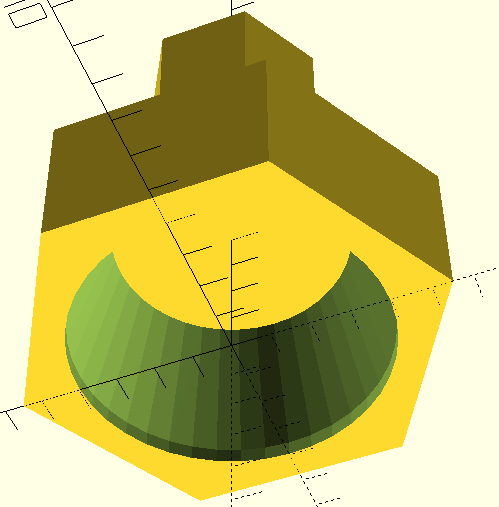
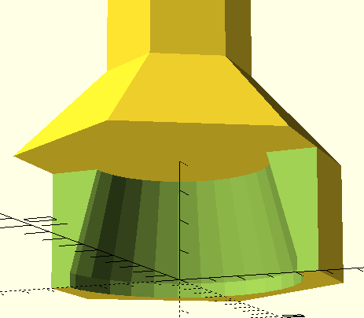
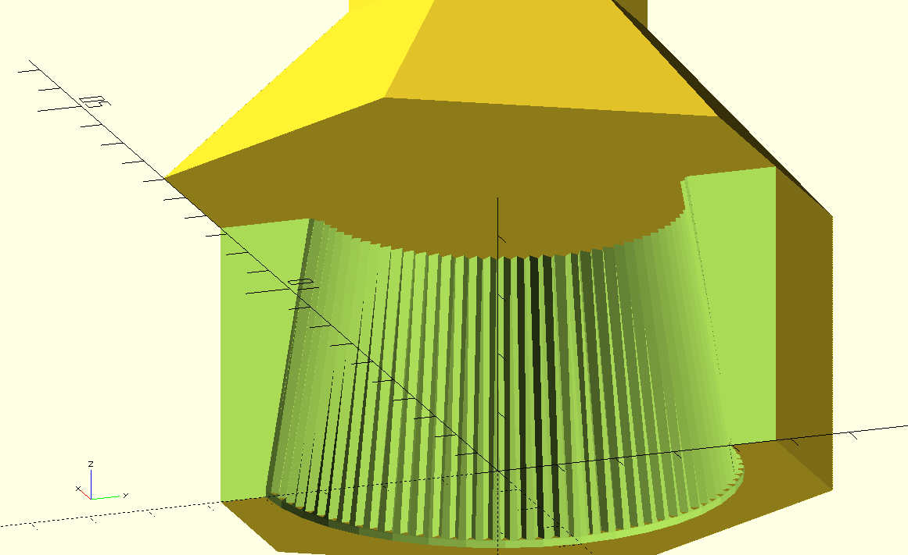

Meet the Knurled2 Nut Driver
This page is a write up with information on how to customize, print, and
use this 3D printed knurled nut driver bit. This bit is unlike others in
that it is designed to be used with a power tool.
When using the proper driver, it has almost no
risk of "over-tightening" or "over-torque-ing" the nuts and
destroying a jack.
It is designed to slip rather instead of over tightening.



Other People's Designs
Most designs rely on two little "slots" or "notches" on the
knurled nut.
A tool slides into these "slots", the same way a screwdriver slides into
a horizontal ("flathead") or cross ("Phillips") slot on a screw. Sometimes it is hard
to line up with these "slots". You can also slip out of the notches if you
are not holding the tool perpendicular enough. To prevent this, some tools also
provide a center alignment pin which goes into the 3.5mm jack itself.
You can find a list
of alternative tools at the bottom of the README of the GitHub repository.

The Design
Initially, I designed a bit to also fit in these "slots". However, these
were quickly destroyed when using a power tool... and the whole point of
this design is to be able to use it with a power tool. You will find
many people recommending not to do this in various places on the internet.
We have been successfully using this bit with a power tool in production.
Instead, of utilizing the slots on a knurled nut, this bit is designed to
use the force of friction. You can see in the image on the left that the
bit has a "cone-shaped"
cutout. As you push down on the knurled nut, this cone
squeezes down. The concept is that simple.
Because the bit does not use the slots of the knurled nut, it is easier to
align. It fits at any rotation. You don't need to be careful about slipping
out of the slots. If you try to over-torque the nut, the bit simply
spins rather because it is not locked into place (via the slots).
This drastically reduces the chance for destroying your jacks with too much
torque. The bit takes damage rather than the nut.
The risk of damage to your Eurorack faceplate is lessened as well. Because
the bit is made of plastic (I am printing with PLA), you don't have as much
risk of scratching the faceplate as you would with a metal driver.
You can see the bit in action with a power tool here.
In the video, the driver is set to a specific amount of torque. You can see and hear
when it reaches the desired level of toruqe.
In this video, the nuts are torqued slightly past hand-tightened strength.

Knurled... squared?
After some weeks of testing... I have made some improvements to the driver
to reduce the rate at which it wears. I knurled the inside of
the bit. I added some "teeth". To do this, I
created a cylinder. Then, in a "for" loop subtracted a triangle at different
rotations.
In other words, imagine you're making a simple circular
cookie... or... pizza. Then, you cut out a triangle in the middle with a knife, going almost
to the edges. Then do that again, but first, rotate your triangle 10 degrees.
If you're rotating by 10 degrees, to go all the way around you'll need to
make (360 degrees / 10 degrees = 36 - 1) 35 triangle cutouts. What you'll be left
with is a bunch of ridges on the inside.
The Driver (Power Tool)
It is not required to use a power tool. This bit can be used by hand as well.
I prefer this bit by hand to any of the other hand drivers (I'm not biased).
| Driver |
Image |
Speed |
Torque |
Notes |
| General Tools 502 |
  |
"Slow" (RPM TODO) |
when LED dims... |
I'm faster spinning this by hand. The motor is still useful to gauge
if it is torqued or not. |
| Ansee Precision Driver |
  |
"Very Fast" (RPM TODO) |
Adjustable |
Well made. Torque is easily adjusted. Creative packaging uses
case as a charging stand. |
Customization